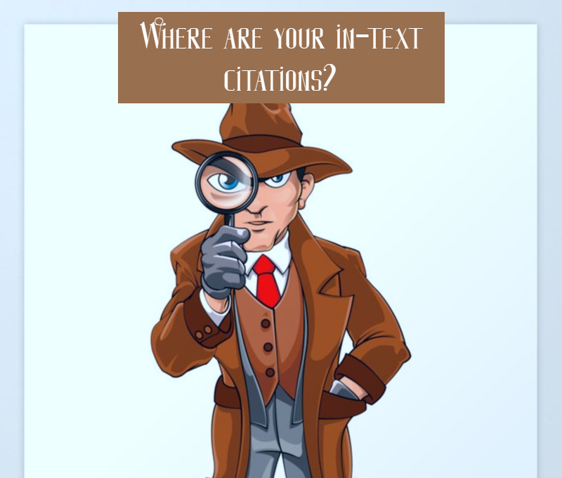

Guidelines on Proper Citation in Academic Writing
April 21, 2021| Category: Writing Tips
Whereas many writers claim that content is the most essential part of academic writing that directly impacts the overall grade, it is not completely right because citations are not less important. When writing essays, research papers, and other academic papers, you frequently use additional sources and readings. Therefore, if you take some information from them and put the data in your paper as some expert evidence or supporting information, you need to cite the sources correctly.

When writing academic papers, it is important to give credit to the original author who was the first one to come up with the ideas. A citation is an indication that the particular idea you have mentioned has its ‘founder’. If you pretend others’ ideas to be yours, it is called plagiarism. Thus, you should always put in parentheses the citation information you specify about the author. It could be the author’s name and the year of publication, for example. The format of citations depends on the formatting style.
The Importance of Citing Sources
It is essential to provide in-text citations no matter what academic paper you are writing, e.g. an essay, a research paper, a coursework project, a case study or anything else. If you are using some expert opinion and mention it within your text, it is a must to cite it properly according to the required formatting style.
Moreover, it is necessary to include citations when you use direct quotations as well as in cases when you paraphrase some ideas from other sources. The purpose of citing is not only to demonstrate that you took those particular ideas from some other sources but also to help readers find the original source more easily. Finally, it helps readers get acquainted with other works of that author (if they are interested).
When it comes to citations, remember to cite all types of sources. It concerns not only books, journals, and articles but also web pages, some audio or video materials.
Quoting
Quoting denotes the exact, word-for-word copying of another person’s words and using them as supporting evidence to prove your ideas or illustrate some of your statements. When you are providing a quote, you need to adhere to the following format:
- Put the quoted phrase in quotation marks.
- If the quote is long, the format is as a block quote (with indentation of the whole piece of text).
- Correctly cite the author of the quote depending on the formatting/citation style.
- Make sure you do not make any changes in the text.
How to Introduce Quotes?
Avoid using quotations on their own. It means that you should not use a quotation as a stand-alone sentence without any comment or interpretation. A quotation should be a complementary part of the idea you put forward. Its role is to describe or illustrate the statement or argument you have written. Additionally, each quote you introduce should have its own purpose within your writing and the reader should clearly understand why you have mentioned the quote.
To write quotes within the text in a grammatically correct way, you need to follow such guidelines and strategies:
Introductory sentence
You can introduce the quotation as a full-fledged sentence and put a full stop after it. When you mention the author who said that, you need to formulate the sentence by using such verbs as ‘argues,’ ‘claims,’ ‘writes,’ ‘suggests,’ ‘reckons,’ ‘reports,’ ‘emphasizes,’ ‘explains,’ and others.
- A poll in Denmark has indicated that from the moment of the Brexit vote the EU has become more supported: “A membership referendum held today would be backed by 55 percent of Danish voters” (Levring, 2018, p. 3).
- Levring (2018) claims that the EU has gained more support from the time of the Brexit vote: “A membership referendum held today would be backed by 55 percent of Danish voters.”
Introductory signal phrase
You may start with a signal phrase, thereby mentioning the source where you took the quote from or the author who said that. However, in the case of a signal phrase, you are not supposed to formulate a whole sentence but rather write this signal phrase followed by a comma. Check out examples below:
- According to a poll that has recently been brought to public attention, “A membership referendum held today would be backed by 55 percent of Danish voters” (Levring, 2018, p. 3).
- As Levring (2018) puts it, “A membership referendum held today would be backed by 55 percent of Danish voters” (p. 3).
Integrate the quotation into your own sentence
You may quote a phrase that is not considered to be a full-fledges sentence. In this case, you just need to integrate that part of the quote in the sentence you wrote. For example,
- A poll that has been brought up to public opinion recently suggests that in the closest referendum the EU membership “would be backed by 55 percent of Danish voters” (Levring, 2018, p.3).
- Levring (2018) emphasizes that in the closest referendum the EU membership “would be backed by 55 percent of Danish voters” (p.3).
When to Use Quotes?
It is always good to use quotes whenever you appeal to some others’ opinions, but keep in mind that you should not heavily rely on quotes and turn your paper into a compilation of citations or quotations. Remember that the bulk of your text should present your original ideas. When you take information from some peer-reviewed source, keep in mind that you should use quotations only when it is important to save the original wording of the ideas. In other cases, feel free to paraphrase the borrowed information and add it as some proof to your ideas. However, in some specific cases, quoting may be more appropriate than paraphrasing. Check them out:
- When it is important to focus on the author’s original statement/their manner or style of writing/language. If you feel the need to comment or analyze what language the author uses when delivering their message across, it is crucial to include quotes. This rule may be particularly applicable to cases when you are writing a paper on Literature or Language and analyze the writing style of the author.
- When you provide evidence. When you are writing a persuasive paper and your aim is to convince the reader to accept your viewpoint, then it is more recommended to appeal to specific quotes from the source that you find trustworthy. This guideline works well especially in situations when you have to use primary sources such as transcripts, manuscripts, interviews, etc. This suggestion may work out well when you are writing a paper on History.
- When you are appealing to the author’s opinion/standpoint/definition of something. When you refer to such secondary sources as books, magazines, journal articles, etc., some occasional quote extracted from there may play the role of sharing the authors’ ideas. So, if you want to put emphasis on the source and its authoritative function, keep in mind that quotations work out best here. Moreover, if you do not want to modify the ideas in any way and it is essential for you to share the exact author’s mode of expressing ideas, then quoting is the best option.
How Many Quotes to Include in the Paper?
The number of quotations you introduce into the paper depends on the paper length, type, and the area of research. For example, when you are writing a paper on Science, it is important to focus on the very information instead of the way of its presentation. Therefore, it is better to use fewer quotes in such papers. On the other hand, in papers relating to Humanities, Liberal Arts, and adjacent areas, proper quotes are much more appropriate.
When it comes to papers on topics related to Social studies, the number of quotes you use depends on the type of research. If it is a quantitative one and you are using many numbers and appeal to statistics and numerical data, you should not use many quotes. However, in qualitative studies, you may use quotes, especially if they add up to the expert evidence. There is a general rule that quotes should not take up more than 10% of the whole paper.
Paraphrasing
When you are paraphrasing some ideas, it means that you extract the essence from them and put it in your own words. When you take some idea from the source and want to paraphrase it, you have to use other wording and sentence structure to convey the same idea in a different form.
Paraphrasing is better than quoting, especially if you are working on some analytical paper. In this case, it will indicate that you have understood the cited work and the author’s ideas, and can thus draw your own conclusions. Even though you are paraphrasing and bringing some novelty from your side into the paper, remember that you should cite the source anyway. If you do not cite ideas you took from research other writers conducted, you have high chances of being accused of plagiarism.
Tips for Proper Paraphrase
The following tips for paraphrasing may seem easy and straightforward, but it may be challenging for some people to write authors’ ideas in a different manner. Check out some tips and tricks that may help you do so:
- Begin your own sentence in a different manner from the original version mentioned in the book or article.
- Use synonyms in order to avoid the same wording.
- Pay attention to the voice (active or passive) used in the original version of the text and change it.
- If there is a large bulk of information, bring it into some shorter parts or separate sentences.
Check out the examples of paraphrasing quotes below:
Original quote:
“But the hearing was about more than Facebook; it exposed a critical turning point as the power, sophistication and potential exploitation of technology outpaces what users, regulators or even its creators expected or seem prepared to handle” (Roose & Kang, 2018, para. 11).
Paraphrased quote:
The conducted hearing made it evident that what the regulators, creators, and users expected has been drastically doomed not only by Facebook platform but also by technology as a whole. At present, such technologies go beyond what these stakeholders can manage properly. The reasons for that are their overwhelming impact, further possibilities for development and sophistication (Roose & Kang, 2018, para. 11).
Comments on the paraphrase:
- Start the first sentence differently than it was in the original source. In this example, it is clear that the beginnings and the order of words are different.
- Use synonyms. These words denote the same things but with a different form. Check out the following synonyms: “exposed a critical turning point” → “made it evident”, “outpaces” → “drastically doomed”, “power” → “overwhelming impact”. If you are struggling with coming up with some new synonyms, use thesaurus.
- Change the whole sentence structure. For example, if originally the author built the sentence in an active voice, try to paraphrase it into passive: “technology outpaces what users, regulators or even its creators expected” → “what the regulators, creators, and users expected has been drastically doomed not only by the Facebook platform but also by technology as a whole”.
- Break the information into smaller units. You can split the information from one long sentence into a few separate sentences.
How to Avoid Plagiarism
When you are paraphrasing some ideas, you should be careful to avoid plagiarism in the text. In which situation can someone accuse you of plagiarism? – When you accidentally write a sentence that is identical to the original version you took from some book and forget to provide an in-text citation. Remember that when the wording is the same, this is a quotation and you should put it into quotation marks. On the other hand, paraphrasing means that you do not repeat original words and phrases but use synonyms and different sentence structures. We strongly recommend that you scan your papers via anti-plagiarism software to ensure that they are plagiarism-free.